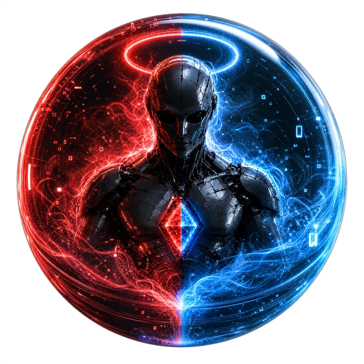

SISTEMA OPERACIONAL FINANCEIRO
Bem-vindo ao ATLAS
Processo, dados e decisão — tudo em um só lugar.
Hold · Trade · DeFi · RWA

SISTEMA OPERACIONAL FINANCEIRO
Processo, dados e decisão — tudo em um só lugar.
Hold · Trade · DeFi · RWA